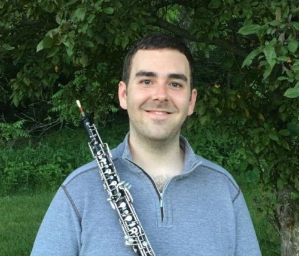

<!DOCTYPE html>
<html></html>
<head>
  <title>Biography</title>
  <style>
  </style>
  <body></body>
  <div class="w3-row w3-container height100">
    <div class="w3-col sidebar" style="width:20%">
      <p></p>
    </div>
    <div class="w3-col middlecontent" style="width:60%">
      <nav>
        <div class="topnav"><a class="active" href="./bio.html">Bio</a><a href="./listen.html">Watch & Listen</a><a href="./gallery.html">Gallery</a><a href="./teaching.html">Teaching</a><a href="./contact.html">Contact</a></div>
      </nav>
      <div class="content">
        <article>
          <h2>Matthew Shipp</h2>
          <p>Matthew Shipp lives in Philadelphia and works as a freelance oboist in Philadelphia and New York City. Mr. Shipp has performed with The Philadelphia Orchestra, Pennsylvania Ballet Orchestra, Chamber Orchestra of Philadelphia, Princeton Symphony, Brooklyn Chamber Orchestra, and Symphony in C.</p>
          <p>As a guest musician, Mr. Shipp has performed with The Philadelphia Orchestra both domestically and internationally in Taiwan, Japan, and South Korea. Recent engagements include performances at Carnegie Hall, Suntory Hall, NHK Hall, Seoul Arts Center, and the National Performing Arts Center of Taiwan. He has been fortunate enough to collaborate with highly esteemed conductors such as Yannick Nézet-Séguin, Kensho Watanabe, Cristian Macelaru, Andreas Delfs, Michelle Merrill, Carl St. Clair, and Rossen Milanov.</p>
          <p>As a chamber musician, Matthew performed the Beethoven Wind Octet Op. 103 with members of The Philadelphia Orchestra as a co-presenter at the CBDNA 2020 Conference. Additionally, he was a featured soloist in Mozart’s aria “Deh vieni, non tardar” with the Temple Chamber Winds at the World Association for Symphonic Bands and Ensembles (WASBE) International Conference in San Jose.</p>
          <p>Mr. Shipp is a graduate of Temple University, where he received the Master of Music degree and studied with Peter Smith, Associate Principal Oboe of The Philadelphia Orchestra. Matthew is a native of Iowa, and prior to moving to Philadelphia, he studied with renowned pedagogue Andrew Parker at the University of Iowa. He has spent summers participating in music festivals such as the Round Top Festival Institute and the New York Symphonic Ensemble’s Tour of Japan.</p>
        </article>
      </div>
    </div>
    <div class="w3-col sidebar" style="width:20%">
      <p> </p>
    </div>
  </div>
</head>
